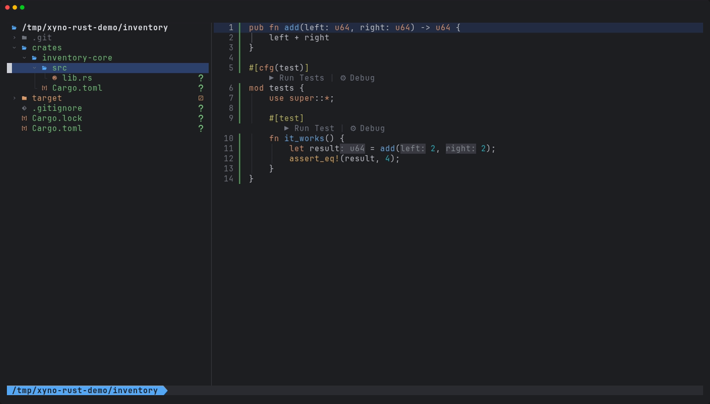
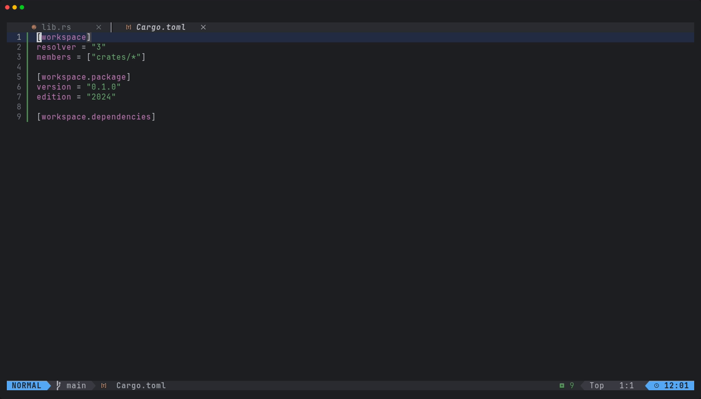
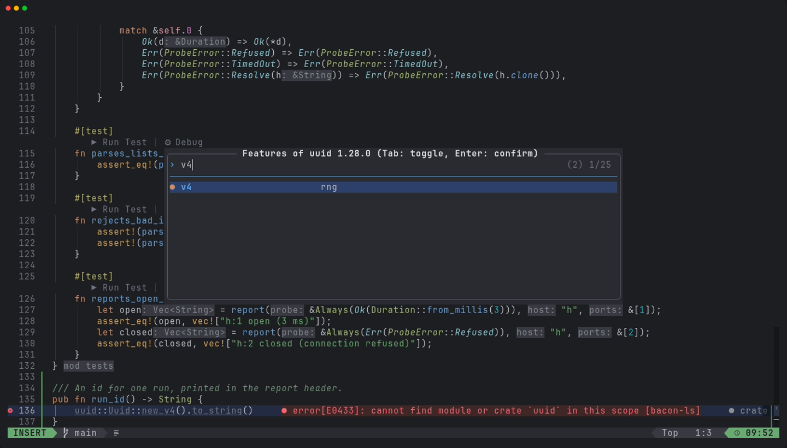
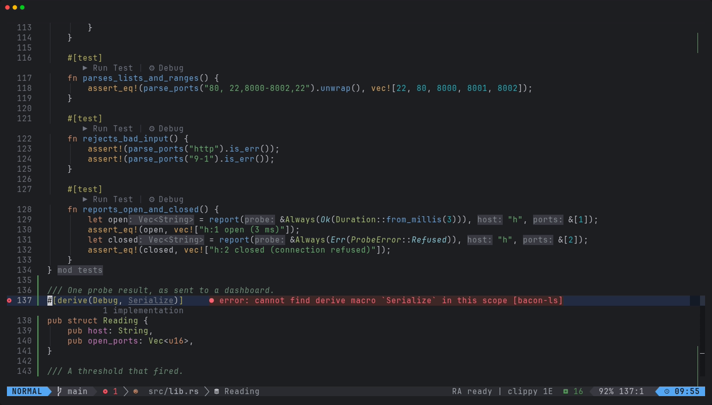

xynovim guide
Cargo workspaces, features and dependencies in Neovim
Adding a dependency, picking its features and starting a workspace are chores that usually mean a terminal, a browser tab for crates.io and a manual edit of Cargo.toml. This guide covers the commands of xynovim, a personal Neovim configuration for Rust, that do these inside the editor: new projects and workspaces, :CrateAdd with feature selection, :CrateFeatures, the code action that enables a missing derive feature, and the feature set that rust-analyzer and clippy share.


New projects and workspaces
Three dashboard entries and four commands create projects. They all run cargo underneath, asynchronously, and remove whatever they created if cargo fails.
| Dashboard | Command | What it creates |
|---|---|---|
b | :RustNewBin [name] | cargo new --bin --vcs git, then opens src/main.rs |
i | :RustNewLib [name] | the same with src/lib.rs; a hyphenated name shows its Rust identifier |
w | :RustNewWorkspace [name] | a workspace with a first member |
:RustNewMember [name] | adds a binary or library to the workspace of the current buffer |
Cargo has no one-step workspace command, so xynovim builds it: a root Cargo.toml with [workspace], resolver = "3" (or "2" for editions before 2024), members = ["crates/*"], [workspace.package] and an empty [workspace.dependencies], and a first member under crates/ that inherits version.workspace and edition.workspace. The edition is whatever your installed cargo writes into a new project, read once per session, never hard-coded. The crates/* glob picks up later members without editing the manifest. :RustNewMember refuses outside a workspace with a members list and refuses a name that collides with an existing member.


The fourth dashboard entry, e, runs :EguiNew [name], which downloads the current eframe_template, personalises it and keeps your own Rust toolchain instead of the template's pin.
Adding a crate with its features
<leader>rA or :CrateAdd [query] searches crates.io and shows version, downloads and the features of the chosen release with their descriptions. You pick features and the target: the package that holds the file, --dev or --build, and workspace.dependencies entries are used when they exist. Then it runs cargo add. Writing a path such as uuid::Uuid::new_v4() for a crate that is not a dependency yet gives a hint and a code action, "Add crate uuid", that does the same and then offers the import.


:CrateAdd, here with v4 toggled on.Exploring and fixing features
:CrateFeatures [crate]is a feature explorer: which features are on or off, what each one unlocks, the default set, an "unused?" hint, and toggling inCargo.toml.<leader>rG, or the code action "Enable feature derive of serde", fixescannot find derive macro Serialize: the feature is found in the crate's own source andCargo.tomlis edited.<leader>rIor:ImportNameimports a name with the candidates ranked and the reasons shown, and remembers your choice per project.


One feature set for the whole workspace
:RustContext chooses the Cargo features and the build target for a workspace, and applies them to rust-analyzer and bacon-ls together so the two diagnostic tiers cannot disagree. :RustTargets lists every binary, example, test and bench of the workspace, and :RustTools opens cargo-deny, audit, machete, bloat and build timings when those tools are installed.
After a dependency changes
Saving Cargo.toml or Cargo.lock from Neovim restarts bacon-ls 500 ms after the last save, and the statusline says deps resolving until rust-analyzer finishes reloading, so a red error in that window is understood as transient. A cargo add in a terminal gets the same treatment on the next focus event.
Limits
- Project creation depends on cargo's own naming rules and on a network for crates.io and the egui template; the egui flow uses a cached copy offline.
- The unknown-crate hint is deliberately conservative: a file with a glob import from a dependency gets no hint.
- New Rust and egui project creation is not demonstrated on Windows or macOS.
Try it
Install the configuration, open the dashboard and press w to create a workspace, then use <leader>rA inside a member to add a crate.
git clone https://github.com/xynorash/xynovim ~/.config/nvim # or ln -s <checkout> ~/.config/nvim
~/.config/nvim/scripts/bootstrap.shxynovim is a personal project: the home page has the tour, the install details and the platform status.